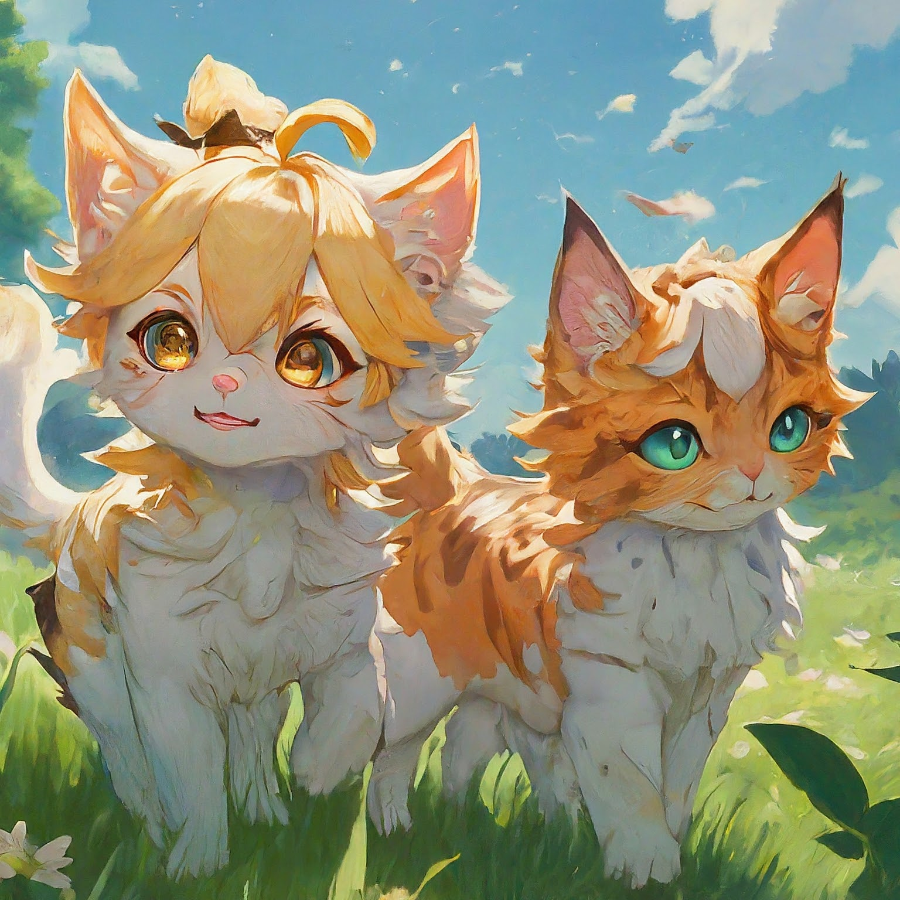
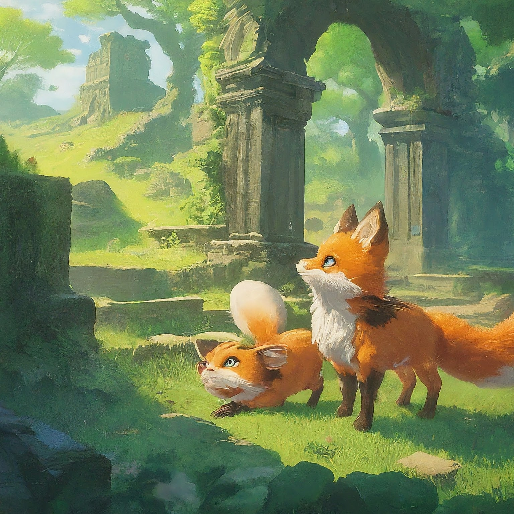
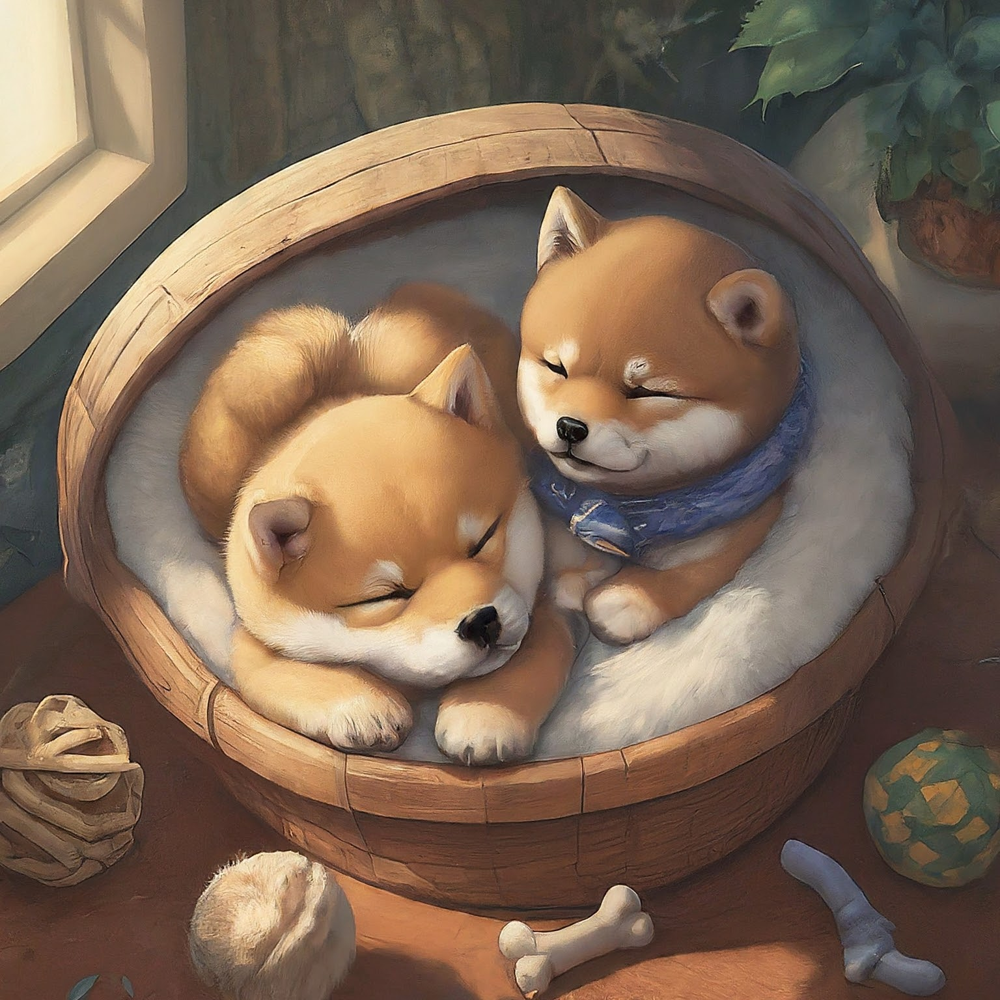
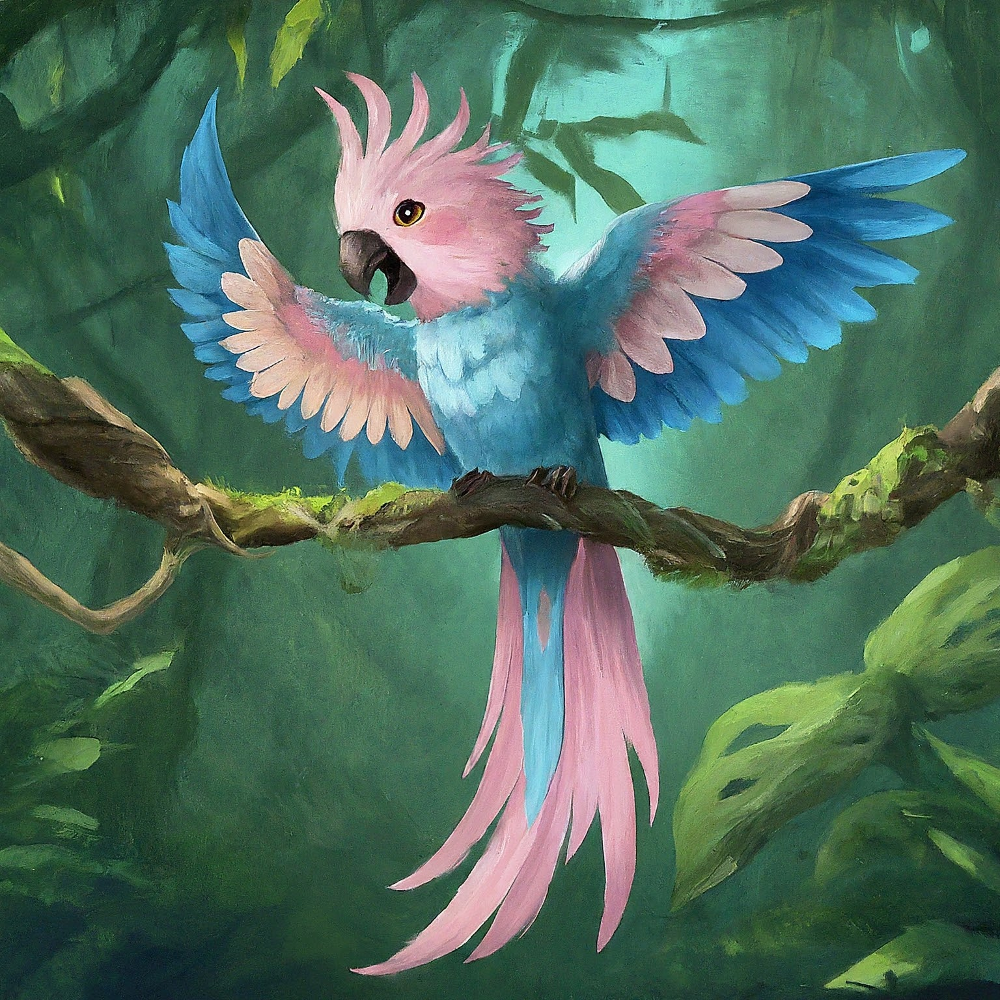

Just a Simple Website
This is a website created with a single HTML file.
Exploring Teyvat and the Astral Express in Genshin Impact and Honkai Star Rail. 🎮
I love to use OPPO, OnePlus, and Others. 📱
I just added a sticky header for practice.



